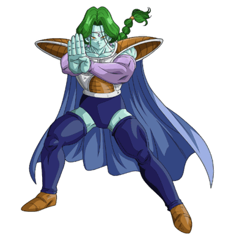
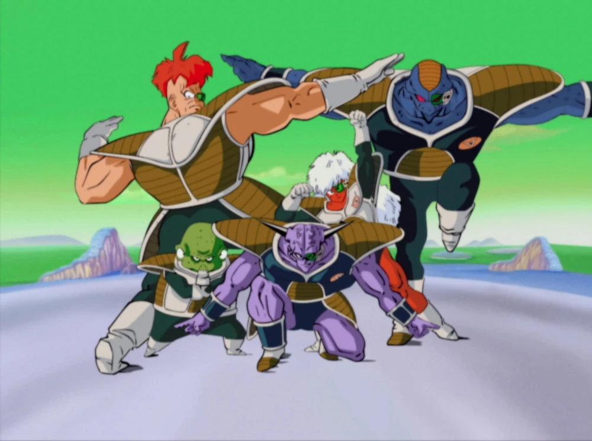

Capítulo 01
Chegada em Namekusei
Gohan, Kuririn e Bulma viajam até o distante planeta Namekusei em busca das Esferas do Dragão para reviver seus amigos — mas Freeza e seus soldados já estão lá com o mesmo objetivo.
A Saga Lendária
A batalha que forjou uma lenda
Os Guerreiros Z
Os Heróis e Vilões da Batalha em Namekusei



A Jornada em Namekusei
01/06
A Jornada em Namekusei
A Batalha que Forjou uma Lenda
Role para atravessar
Capítulo 01
Gohan, Kuririn e Bulma viajam até o distante planeta Namekusei em busca das Esferas do Dragão para reviver seus amigos — mas Freeza e seus soldados já estão lá com o mesmo objetivo.

Capítulo 02
Freeza convoca a temida força de elite. O Capitão Ginyu troca de corpo com Goku, e só a astúcia dos Guerreiros Z impede o desastre antes da chegada do verdadeiro perigo.

Capítulo 03
No auge da batalha, Freeza assassina Kuririn diante de Goku. A perda do amigo de toda uma vida acende uma fúria capaz de despertar uma lenda adormecida.

Capítulo 04
Cabelos dourados, aura flamejante: pela primeira vez em mil anos, um Saiyajin alcança a transformação lendária. Goku enfim encara Freeza de igual para igual.
Capítulo 05
Goku Super Saiyajin contra Freeza em 100% de seu poder. Um confronto colossal que define o destino do universo enquanto Namekusei se desfaz a cada golpe.

Capítulo 06
Com o planeta à beira da explosão, Goku enfrenta seus últimos instantes contra o tirano e prova que a esperança — e a coragem — sempre encontram um caminho.